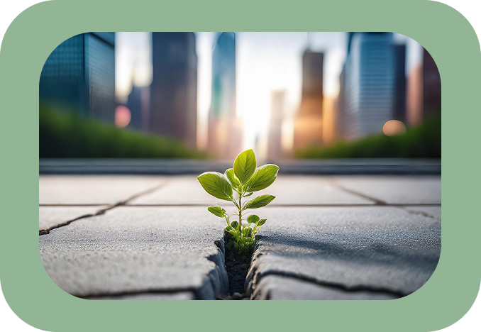

Herzlichen Glückwunsch, du hast den Jackpot gewonnen! Du bist als Mensch geboren, die Chancen dafür stehen Schätzungen nach 1 zu 400 Billionen. Du bist das Wunder der Evolution, der Beherrscher des Feuers. Du hast kognitive Fähigkeiten, um die dich Tiere beneiden würden, wenn sie überhaupt ein so komplexes Gefühl wie Neid empfinden könnten. Du kannst wie keine andere Lebensform deine Gedanken und Gefühle präzise mitteilen, du kannst innovativ denken und Probleme lösen.
Und du bist das einzige Lebewesen auf diesem Planeten, das arrogant, gierig und zerstörerisch sein kann.
Als der Mensch vor einigen 10.000 Jahren sein Bewusstsein entwickelte, war er noch weit davon entfernt, aus dem komplexen System namens Natur auszubrechen. Er war noch weit entfernt von Massentierhaltung, Brandrodung und Urbanisierung. Noch weit entfernt davon, Pflanzen ihren Nutzen abzusprechen und sie als Unkraut zu bezeichnen. In der Umweltethik werden diese Erscheinungen in dem Zungenbrecher Anthropozentrismus zusammengefasst, einfacher gesagt Menschzentriertheit.
Unkraut und Menschzentriertheit
Doch keine Sorge, ich kann dich entlasten: Du hast heute noch kein Stück Regenwald abgefackelt. Und die hässlichen Plattenbauten in deiner Stadt hast du auch nicht gebaut. Sehr gut, doch Anthropozentrismus startet nicht in diesen großen Dimensionen. Es fängt ganz gewöhnlich an, zum Beispiel bei einer alltäglichen Erscheinung wie Unkraut. Ja, das Unkraut, welches zwischen Pflastersteinen hervorlugt, bei dessen Beseitigung du vielleicht als Kind mal helfen musstest.
Schon im 19. Jahrhundert stellte der französische Schriftsteller Edmond Rostand fest: „Wenn man ein Gewächs Unkraut nennt, zeigt sich darin die ganze Anmaßung des Menschen.“ Anmaßend, ja fast arrogant, entscheiden wir, was nützlich ist und was wir nicht brauchen. Denn wir sind ja die Krönung der Schöpfung, nicht wahr? Haben wir das Recht, die Natur, unseren Ursprung, nach unseren eigenen Maßstäben zu beurteilen? Es klingt paradox, aber genau so wächst jeder von uns auf, und wir halten es für normal. Und in vielen Bereichen ist der Mensch bereits weit gekommen. Sei es in der Zucht neuer Tierrassen, beim Kanalisieren von Gewässern oder bei der genetischen Veränderung vieler Obst- und Gemüsesorten. Ironisch ist bei so großen Errungenschaften, dass gerade Unkraut den Menschen im Namen der Natur seit Beginn des Ackerbaus seine Grenzen zeigt. Man könnte meinen, dass die Natur sich selbst hilft, denn die Verbreitung durch Wind oder Tiere verhindert, dass Unkraut vergeht. Ein anderer Grund ist, dass sogenannte Superunkräuter sogar gegen Herbizide, also Unkrautvernichter, eine Resistenz entwickeln.
Vom Unkraut zum Umdenken
Einige Betriebe haben bereits erkannt, dass es von Vorteil sein kann, Unkräuter wachsen zu lassen, anstatt sie zu bekämpfen. Auf Bioland-Betrieben zum Beispiel werden aus Schädlingen Nützlinge. Statt auf eigens angelegten Blühstreifen wachsen die Kräuter zwischen den konventionellen Nutzpflanzen und bieten Vögeln und Insekten zusätzliche Pollen und Samen.
Die Entwicklungen in der Landwirtschaft zeigen, dass wir uns noch in einem Prozess des Wandels, vielleicht auch der Akzeptanz befinden. Aber was gilt es zu akzeptieren?
Erst im 19. Jahrhundert wurde das von Nikolaus Kopernikus entwickelte heliozentrische Weltbild allgemein gesellschaftlich akzeptiert. Die Vorstellung, dass sich die Erde um die Sonne dreht und nicht umgekehrt, erregte nicht ohne Grund Aufsehen. Was sollte das bedeuten? Wir sind nicht der Mittelpunkt? Es dreht sich nicht alles um uns? Wenn wir Hunderte von Jahren gebraucht haben, um zu akzeptieren, dass sich die Sonne nicht um die Erde dreht, wie lange wird es dann noch dauern, bis wir erkennen, dass sich die Natur nicht um den Menschen dreht? Ist dies wirklich “unsere” Erde? Oder sind wir nur Gäste in der Jahrmillionen alten Geschichte dieses Planeten? Wenn ja, dann sind wir ziemlich unhöfliche Gäste. Die das Haus, das sie besuchen, verwüsten und umgestalten, als wäre es ihr eigenes.
Kleine Pflanze, große Botschaft
Aber wir wissen auch, dass sich der wahre Besitzer des Hauses manchmal sehr eindrucksvoll bemerkbar macht. Tsunamis, Erdbeben, Tornados: Ereignisse, die uns unsere Ohnmacht gegenüber der Natur vor Augen führen. Eine gute Neuigkeit: Du musst nicht warten, bis ein Tornado dein menschliches Selbstvertrauen herumschleudert! Es geht viel sanfter, vielleicht durch ein kleines Pflänzchen, das durch den von Menschen gemachten Asphalt wächst. Unkraut kann man ausreißen oder verbrennen, es kommt immer wieder. Der Fehler ist, dieses Wiederkehren als Akt der Natur gegen uns zu sehen, obwohl es faktisch der größte Zuspruch der Natur für uns ist. Denn eigentlich will uns dieses Pflänzchen nur daran erinnern: Mensch und Natur gehören zusammen und lassen sich auch durch noch so viele Asphaltwelten nicht trennen.
Demnach: Herzlichen Glückwunsch, du hast den Jackpot gewonnen! Du bist Teil eines vielfältigen, kraftvollen Kreislaufs! Du bist anpassungsfähig, kreativ und einfühlsam. Wunderbare Eigenschaften, die zum Glück nicht nur dich, sondern viele Lebewesen auszeichnen. Und wenn du das nächste Mal mit deinen ausgezeichneten menschlichen Augen einen Löwenzahn am Straßenrand siehst, lass es eine Einladung für dich sein, zumindest gedanklich kurz in diesen Kreislauf zurückzukehren.
